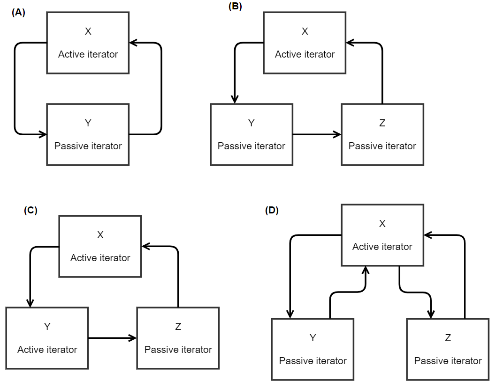

Workflow of component in simulation
This page explains the workflow a component is expected to follow during a simulation run, excluding the start and end of a simulation run.
How to read this page
Some sections in this page use pseudocode. For reference, see Pseudocode reference.
Each pseudocode block is explained in text. The pseudocode is always the primary specification. That is, if the pseudocode conflicts with the text, the pseudocode has preference because the text is merely elaborative.
The following apply in all pseudocode blocks of this page.
| Item in pseudocode | Meaning |
|---|---|
| publ error | Publish a Status message that indicates an error to "Status.Error" |
| publ ready | Publish a Status message that indicates readiness to "Status.Ready" topic |
| recv epoch | From "Epoch" topic, receive an Epoch message |
| recv input | Receive input for calculation. This does not specify the topic the input comes from. |
| recv running | From "SimState" topic, receive a SimState message with state "running" |
| recv stop | From "SimState" topic, receive a SimState message with state "stopped" |
Handling simulation state and epochs
recv running
publ ready
first_epoch = true
loop
wait for one of
recv stop
quit
recv epoch
// Include this if block only when implementing an initialization workflow
if first_epoch
first_epoch = false // Reach this block only once
// Run initialization workflow
run_initialization_workflow()
// Run calculation workflow
run_calculation_workflow()
The workflow start with the reception of the state message "running". Then, the component announces it is ready to start by publishing "ready".
Once all components have announced they are ready, the platform starts the actual epochs of simulation. In each epoch, the component first awaits an epoch message. However, if the platform instructs the component to stop during this wait, the component will quit.
In epoch 1, the component MAY start with an initialization workflow. This means that the component communicates some parameters with other components.
Regardless if an initialization workflow took place or not, the component continues to the calculation workflow.
Next, the component awaits another epoch to begin.
Initialization workflow
Initialization workflow is an OPTIONAL step in epoch 1. In this workflow, the component communicates some information with other components before starting the calculation workflow. The component developer decides the following about the initialization workflow depending on the needs:
- What information is communicated
- How many components are involved
- Which messages are published
- Which components receive the published messages
- Whether each component should only receive, only publish or both receive and publish messages
-
If the component implements an initialization workflow, this:
-
MUST occur in epoch 1
- MUST occur exactly once in each simulation run
- MUST occur as the first task the component accomplishes in the epoch
Topic names
Any topic name involved in the initialization workflow MUST start with "Init.".
To prevent confusion in the processing of messages, a topic name involved in the calculation workflow of any component MUST NOT be involved in the initialization workflow of any component.
Publish
In this example, the component publishes a message in the initialization workflow. This is appropriate if the component has some information the other components need.
function run_initialization_workflow()
publish init_info to topic "Init.Xyz"
Receive
In this example, the component receives a message in the initialization workflow. This is appropriate if the component needs some information from another component.
function run_initialization_workflow()
recv init_info from topic "Init.Xyz"
Calculation workflow
This section describes the rules of interaction for components within one epoch. Although the word "calculation" appears in the title, the component does not necessarily calculate anything. If appropriate, the component may as well supply predefined values from a time series, for instance.
The calculation workflow takes place after each reception of an epoch message. That is, this excludes the reception of the epoch message!
REQUIRED items
function run_calculation_workflow()
// 1. Calculate whatever you want. Communicate with other components as needed.
// ...
// 2. Report readiness
publ ready
When a component has finished its operation in the epoch, it MUST send a ready message. This is the sole requirement set by the platform. A particular simulation scenario CAN set further requirements to enable the components to interact, but these are beyond the core functionality of the platform.
Send in Every Epoch
A component MAY publish results (i.e., output data) as the developers consider appropriate, but there is a rule called "Send in Every Epoch" (SIEE). This means that the component SHOULD be predictable in its publishing behaviour.
For example, let component C have the capability to publish a result of type R. If C publishes an R in any epoch, it SHOULD publish an R in all epochs during the simulation run. The motivation is that the other components may not know when to expect R and when not. Therefore, it is most straightforward to always publish an R.
Depending on the simulation scenario, the data enclosed in R can remain unchanged between certain epochs. For instance, if the resolution of a timeseries is 60 minutes and epoch length 15 minutes, a change will occur only in every fourth epoch. To follow the SIEE rule, C would re-send the same result data again when no changes have occurred. To help other components in saving resources and possibly avoid redundant calculation, C SHOULD assign the value of the field "LastUpdatedInEpoch" to indicate when the most recent change has occurred (see AbstractResult). Still, C MUST update the other metadata as specified in page AbstractResult.
Without input data
This is an OPTIONAL workflow. It is applicable when no input data is needed for calculation.
function run_calculation_workflow()
calc result
publ result
publ ready
The component calculates a result and publishes this. What is calculated and how and to which topic it is published depends on the component. Finally, the component reports readiness.
With input data
This is an OPTIONAL workflow. It is applicable when input data is necessary for calculation.
function run_calculation_workflow()
wait for one of
recv stop
quit
recv input
calc result
publ result
publ ready
Before calculation, the component waits for input data. If it the platform instruct the component to stop while waiting, the execution will end. After receiving the data, to component calculates and publishes a result. What this result is and to which topic it is published depends on the component.
Iterative calculation during epoch
Basic rules
When components run an iterative algorithm during an epoch, the related functionality must be designed carefully.
Iteration MUST NOT be infinite, because this would cause the simulation to get stuck. Therefore, iteration MUST be designed in one of the following ways:
- (a) There is a guarantee that the algorithm always converges eventually
- (b) If convergence cannot be guaranteed, the component MUST use another mechanism to end iteration when convergence does not occur
Alternative (b) MAY require that the iterating component still publishes a reasonable result. This result MAY be:
- (h) A default value
- (i) A value calculated with a simpler algorithm
- (j) Anything else considered appropriate
The way to guarantee a reasonable result is case-specific and therefore out of scope of the core platform. This means that the component developers MUST recognize this need on their own and design an appropriate mechanism.
Multi-component iteration
Multi-component schemes
Iteration MAY include multiple components. This means that one or more components form one or more groups where the components both produce input data to one another and consume the result data of one another.
When multi-component iteration occurs, the component developers MUST take care that the iteration ends eventually. To ensure this, the component developers MUST assign each iterating component a role of either active or passive iterator:
- Active iterators. Each iteration group MUST include at least one active iterator component that has the ability to decide when to end iteration.
- Passive iterators. In a group of iterators, all components that are not active iterators are passive. These do not actively decide when to end iteration but know that they are involved in iteration. Passive iterators MUST understand the decision of an active iterator to end.
The following figure illustrates a few of the potential iteration schemes. In the figure, each arrow represents how each component supplies results that are the input data of another component. The schemes include:
- (A) A cycle of two components, one active and one passive
- (B) A cycle of three components, one active and two passive
- (C) A cycle of three components, two active and one passive
- If any active iterator decides to end iteration, the result messages will deliver this information to all
- (D) Two iteration cycles both of which have X as the active iterator; these cycles may operate independently if wanted
Still, the scheme MAY be even more complex, that is, contain more components and more cycles.

Messaging in iteration
In a multi-component iteration scheme, all iterating components MUST communicate the status of iteration in each result message. The component MUST indicate this in two ways:
- (1) Using the field "IterationStatus" (see AbstractMessage) and
- (2) Using the suffix ".Iter" in topic name when the result is intermediate and omitting this suffix when the result is final
- Please see the naming conventions in page Conventions of naming
Together, conditions (1) and (2) ensure a uniform way to communicate which of the messages represent intermediate results and which are final. This has at least the following uses:
- During a simulation, enable a component to receive only final results when it does not participate in iteration
- After simulation, enable the separation of intermediate and final results in the retrieval of logged data
The following tables tells how active and passive iterators decide whether to continue iteration. An active iterator continues iteration as long as it wants and no other iterator has declared its output as "final". In contrast, a passive iterator never decides when to end but instead re-uses the iteration status it has received in input.
Active iterator:
| Does the iterator want to iterate still? | IterationStatus received in input data | IterationStatus to assign to result message |
|---|---|---|
| Yes | Intermediate | Intermediate (iteration continues) |
| Yes | Final | Final (iteration ends) |
| No | Intermediate | Final (iteration ends) |
| No | Final | Final (iteration ends) |
Passive iterator:
| IterationStatus received in input data | IterationStatus to assign to result message |
|---|---|
| Intermediate | Intermediate (iteration continues) |
| Final | Final (iteration ends) |
Active iterator workflow
The following code shows the basic workflow that an active iterator MAY implement for epochs. This assumes that the iterator receives exactly one result message as the input.
topic = "TopicX" // Just an example
loop // Loop to enable iteration
wait for one of
recv stop
quit
input = recv input
iter_status = decide my iter status
topic_temp = topic
// Iter status is final if this iterator wants it or
// if the input data is final
if input.iter_status is final
iter_status = final
if iter_status is not final
topic_temp = topic_temp + ".Iter"
result = calc result
result.iter_status = iter_status
publ result to topic_temp
if iter_status is final
publ ready
break loop
Passive iterator workflow
The following code shows the basic workflow that a passive iterator MAY implement for epochs. This assumes that the iterator receives exactly one result message as the input.
topic = "TopicY" // Just an example
loop // Loop to enable iteration
wait for one of
recv stop
quit
input = recv input
topic_temp = topic
if input.iter_status is not final
topic_temp = topic_temp + ".Iter"
calc result
result.iter_status = input.iter_status
publ result to topic_temp
if input.iter_status is final
publ ready
break loop
Error handling
Error is a condition that the component cannot recover from. This happens when, e.g., the component receives a message it should use in calculation but the message is malformed or when there is a bug in the component that prevents further execution.
Each component SHOULD be designed to detect errors. Fortunately, modern software languages have mechanisms, such as exceptions, that enable straightforward error handling. Regardless of the mechanism, the component SHOULD be ready to encounter an error anywhere in the code. Such error handling facilitates the tracking of bugs, which inevitably occur in software. Carefully implemented error handling reduces the time required for development.
Not all errors can be communicated. For example, the network can be out of reach or the component can run out of memory. However, it is common that communication is still possible regardless of an error.
In case an error occurs in a component, the platform has been designed to work as follows:
- The component reports the error
- The platform signals all components to stop and will publish no more epoch messages
- I.e., all components MUST quit
- If another component is busy on calculation when the stop message arrives, it MAY continue to produce a result and publish this before quitting
The following explains how a component SHOULD behave when it has encountered an error. The component immediately publishes an error message (see section how to read). Now, the component waits for the platform to stop the simulation. However, if the component receives another message instead (likely the result of another component or an epoch message), it will re-publish the error message.
loop
publ error
wait for one of
recv stop
quit
recv epoch
recv input
// From here, the execution will jump to start of loop
Warnings
A warning means that something is wrong in the logic of a process, but this can still produce something meaningful as the result. Possible causes for warnings include, for instance:
- Invalid or unrealistic input data
- Failure to converge the calculation
Warnings are informative but not fatal. Still, the presence of a warning in a message MAY cause a fatal condition in another process.
When a warning occurs, the process MAY, depending on the situation:
- Supply default values as the result
- Execute a secondary calculation logic to have some result
- Execute its primary calculation logic, although the result can be unreliable
How to indicate warning
When a component thinks a warning has occurred, it SHOULD indicate this in the result message. Please see AbstractResult.
Logging
Each component SHOULD have an internal log to help in development and debugging. The reason is that it can be difficult to include all relevant information in the messages that indicate errors or warnings.
The log SHOULD contain at least:
- Error information (such as stack trace if the platform generates exceptions)
- Warning information
The log MAY contain:
- Entries about the execution of the component, such a steps of the internal workflow
- Any other information considered relevant